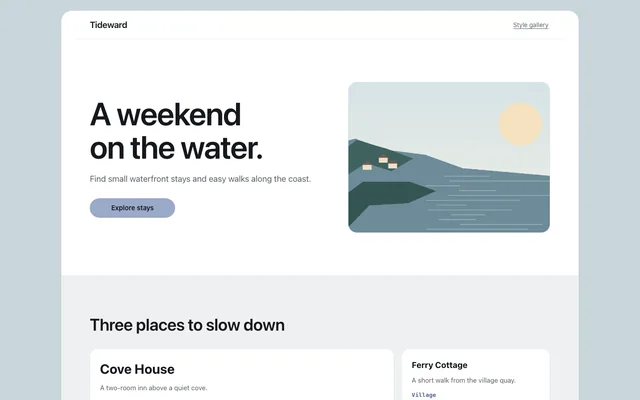
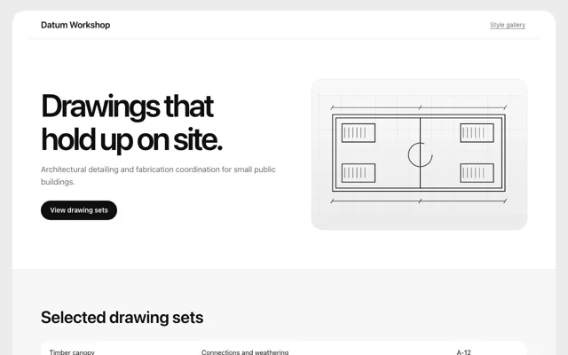
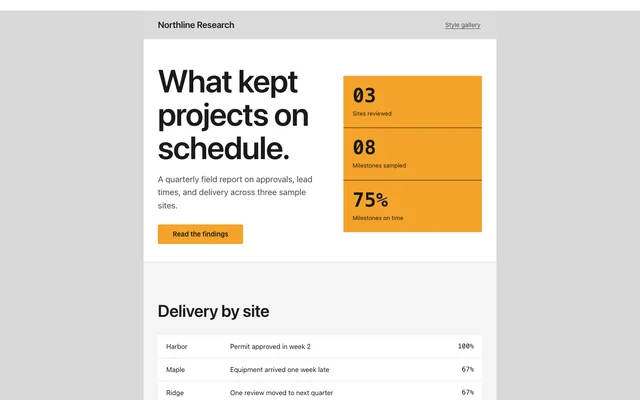
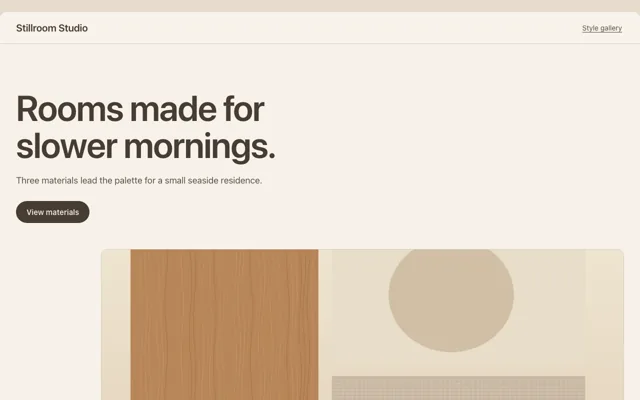
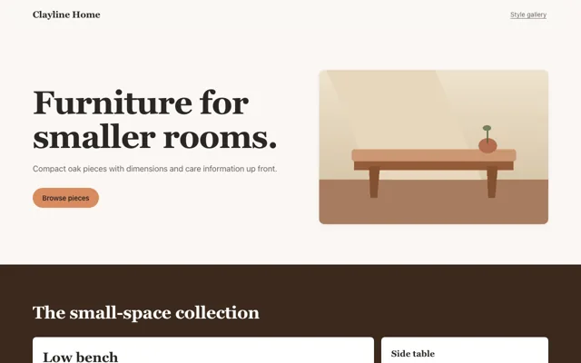
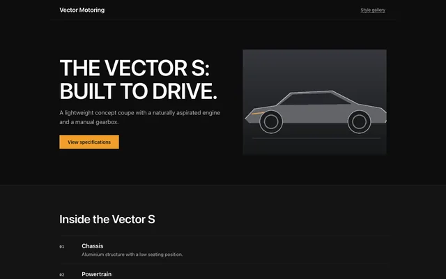
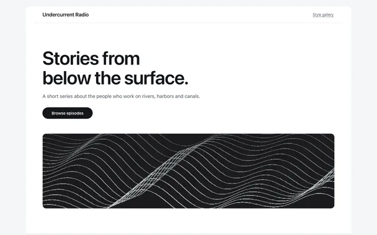
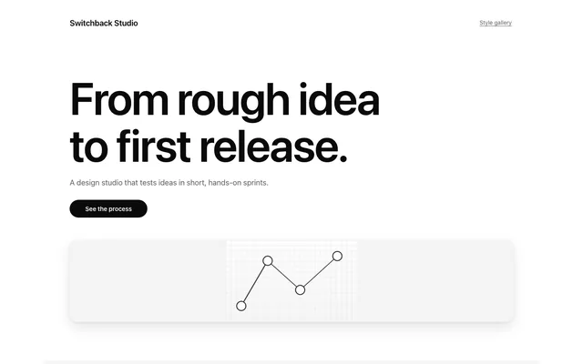
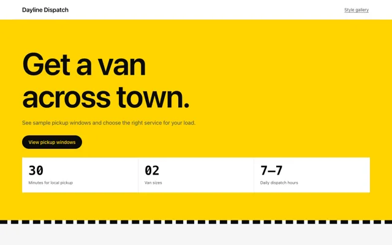

Coastal EditorialTideward · Airy travel editorial with sea-grey framing, periwinkle and rounded photo slots.
Explore twelve design directions. Each uses a fictional brief and the preset’s own tokens.

Coastal EditorialTideward · Airy travel editorial with sea-grey framing, periwinkle and rounded photo slots.

Blueprint MonoDatum Workshop · Monochrome architectural presentation with specimen-like structure and aligned data.

Marigold ReportNorthline Research · Report cover and findings spread with a marigold metric block and print-like rules.

Atelier WarmStillroom Studio · Oat and coffee tones, poster-scale type, and material-led art direction for a studio.

Terracotta CommerceClayline Home · Warm retail palette, terracotta actions, lifted product cards and a dark collection band.

Midnight ShowroomVector Motoring · Luxury showroom with a near-black stage, amber accents and uppercase display type.

Broadcast LightUndercurrent Radio · Daylight media index with a black program band, platform links and an episode shelf.

Studio KineticSwitchback Studio · Monochrome agency page using a grid, pill actions and staggered process cards.
 Campus Bright
Campus Bright
Open Bench · High-contrast course catalogue with yellow actions and alternating light and dark bands.
 Charter Navy
Charter Navy
Meridian Air · Corporate aviation layout with navy framing, white content cards and a restrained red rule.

Dispatch YellowDayline Dispatch · Safety-yellow service page with black type, flat panels and a checkered dispatch stripe.
 Gallery White
Gallery White
Lumen One · Quiet studio lighting, generous white space and one blue action.